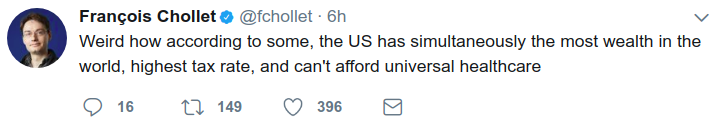

Week 36
What Does NK Want?
https://youtu.be/nD2RWXicpbM
It is now becoming clear NK wants to get from under China's thumb. US engaged China at first (the right thing to do at the time, and it unearthed some more knowledge), but this was exactly the opposite of what NK wanted, naturally shit hit the fan. Un probably got this going at this time bcz he knows curr. US admin is lukewarm against China. NK had Un brother killed, he was under Chinese protection. The latest hyd bomb went off right when Xi was in a summit, major black eye.
This makes more sense.
The Ultimate Stimulus: Social Safety Net
More Blyth
https://youtu.be/nSWS10kQMjg
Also, a grand lecture on populism, also his take on where 70s inflation came from.
Mark Blyth: "[From his speech to German left party SPD] But look beyond this, and there is a bigger issue for left parties to deal with, one that they unfortunately helped to create. Back in the 1970s, a period that now seems quite benign, corporate profits were very low, labor’s share of income was very high, and inflation was rising. We were told that this was unsustainable, and new institutions and policies were constructed to make sure that this particular mix of outcomes would never happen again.
In this regard we were singularly successful. Today, corporate profits have never been higher, labor’s share of national income has almost never been lower, and inflation has given way to deflation. So are we happier for this change?
What we have done over the past thirty years is to build a creditor’s paradise of positive real interest rates, low inflation, open markets, beaten-down unions, and a retreating state — all policed by unelected economic officials in central banks and other unelected institutions that have only one target: to keep such a creditor’s paradise going.
In such a world, why would you, the average worker, ever get a pay rise? Indeed, is it any wonder that inequality is everywhere an issue? In Europe this plays out at the national level, and at the international level of creditor countries (good) and debtor countries (bad), where the rights of the creditors must be protected and the mantra that “you must pay your debts” must be respected.
Yet even in terms of simple welfare economics, this is nonsense. If the cost of squeezing the debtor is to keep her in debt servitude, or if the losses to the creditors are less than the costs of servicing the debt in perpetuity, then default is efficient, if not moral.
Today it is a profound irony that European social democrats worry deeply, as they should, about the investor protection clauses embedded in the proposed Transatlantic Investment Treaty with the US, and yet they demand enforcement of exactly the same creditor protections on their fellow Europeans without pausing for breath for the money they “lent” to them to bail out their own banking systems’ errant lending decisions.
Something has gone badly wrong when social democracy thinks this is OK. It is not. Because it begs the fundamental question, “what are you for — if you are for this?” The German Social Democrats, for we are all the heirs of Rosa Luxemburg, today stand as the joint enforcers of a creditor’s paradise. Is that who you really want to be? Modern European history has turned many times on the choices of the SPD. This is one of those moments.
It’s great that my book has helped remind you of the poverty of these ideas. But the point is to recover your voice, not just your historical memory. Your vote share isn’t going down because you are not shadowing the CDU enough. Its going down because if all you do is that, why should anyone vote for you at all?
I hope that reading my book reminds the SPD of one thing: that the reason they exist is to do more than simply to enforce a creditor’s paradise in Europe"
Yes
As interesting as CDU's loss of votes and rise of AfD, there is the hollowing out of the left in Germany.
NYT
Even as the number of working people [in Germany] has increased, so has the number of people relying on government benefits. Since 2012, an additional 2.1 million people have turned to government assistance. In all, 7.2 percent of the population relies on it.
Many are the working poor whose income are not enough to sustain them. More than seven million people hold so-called mini-jobs, part-time positions without any contribution to health insurance.
Yes
Very important to notice, Germany does not have universal health coverage, as in Canada, Australia. Insurance lobby is influential here, there is a sort of individual mandate, like Obamacare (an overengineered piece of shit, whose architect, aptly named Mr. Gruber, occasionally comes up in the news for fraud charges).
While we are on subject of improvements: ARD payments scheme needs dismantling. Almost everyone I talked to about this agree. The integrators all over the world need to understand, noone is scared of you. And a single broadcaster, in today's world, will not hold back any mythical return to despotism. The job of government is protect borders, make common person's life as transaction-free as possible, providing no-strings-attached services, not creating the conditions where organizations keep extracting money from its citizens who are mostly unwilling or don't care.
Question
GR deep state wanted a grand-coalition between CDU and SPD. Was that the right move?
No
When two grand parties are in government, the protest votes have nowhere to go, so this time it went to Nazis. I am not sure why the DS wanted the grand coalition.. I think back then there were some protests, they were worried, wanted garner "as much legitimacy as possible in government". But it backfired. Now SPD says they are going into opposition - right move.
Question
How could CDU suffer losses in the East, Merkel's constituents are there!
Wrong
Her constituents are the hipsters in Berlin. Really. If she were not the Chancellor, I could definitely see her working in one of the tech startups in Berlin. BTW, being mostly neutral / vehemently for, as in crazy supportive of refugees is a common stance seen among certain type of affluent person in GR / hipster Berliner.
Did the Euro have a hand in Greece's demise?
Yes
Once in Euro, debtors figured now Greeks cannot devalue (pay back the debt in depreciated Euros, since they do not own the printing press now) and since their risk would still be considered "less safe" on paper, they'd have to offer better rates. Win-win in their minds. Naturally the Greek gov had huge influx of cash through its bonds that helped it pay for public services.
Question
Was Euro an export advantage for economically stronger countries, e.g. Netherlands, Germany?
Yes
A currency's strength reflects the confidence in that country, but after Euro, stronger countries were in the same pool with medium-strength countries, Euro's price reflected that, it became cheaper for Netherlands, Germany. Cheap currency = huge export advantage. Reverse was true for Greece, Euro become an export disadvantage for them.
Question
Then Greece should not have entered the Euro?
Not before they were ready
Huge influx of cash into government bonds covered up a lot of their weaknesses, such as an inability to collect taxes. Why try to collect taxes when money is raining down on you? But at the end of the day, bad governance is bad governance. It'd all blow up at some point.
Question
How do ppl make money from government bonds? The returns are meager.
Leverage
10-1 leverage turns 3% into 30%. Futures contracts, which can be based on bonds, have implicit leverage (but they are traded on open exchanges -which Dodd-Frank prefers-, they are cleared daily, so they are safe). Banks failed pre-2008 because they took huge leverage (not on open exchanges) trying to make money in low rate environment, creating excessive risk.
Question
Did EU, its intelligence services engineer "a coup" to oust the previous President Yanukovych in Ukraine?
No
That was US + CIA (pretty sure WH did not have a clue). Why did they do it? What interest did US have in Ukraine? None. They did it simply to f--k with Putin's mind, then they watched him run around like a scared little bitch. Crimea was annexed, but, RU soldiers were already there.. They were inside the barracks, they just stepped outside the barracks. No major change. It was fun, I bet ppl at CIA had bunch of gas, but other events took place after that, civilians died, do the instigators care about that? No.
Plus US managed to insert a bigger wedge between RU / EU, good strategy for them bcz US does not want EU / RU raproachement.
Obviously RU state is a sad sack of kleptocrats that needs to democratise, ASAP. That is a whole seperate issue.
Question
How much effect did Russia have on US elections through FB fake-news, hacking?
None
They surely tried, but their effect? Nada. Most of the hoopla is purported by media 1) to hit Trump 2) to hit new media. I do like seeing Trump cringe of course he would not give an inch "to our side" on climate, but it is what it is.
Systemic Risk Council
The Council believes that it is not possible to develop a single simple regulatory metric that would pass the test of time and withstand regulatory arbitrage. For that reason, it opposes exempting large and complex firms from other prudential regulations if they exceed a specified leverage ratio. [..]
The Council worries that the UST Report proposal excluding certain types of assets from total assets in the SLR would prove to be the thin end of a very thick wedge.
Interesting
They are not happy. Any comment around leverage rings alarm bells in my head. Post-2008 the understanding is banks are not there to make money. They are there not to f--k shit up.
He is talking about this video
It is such a stupid video -- and I love it. :)
Go easy on the millenials man.. What is millenial humor anyway? One of the same actors is in this video for ex... the shit is funny.
